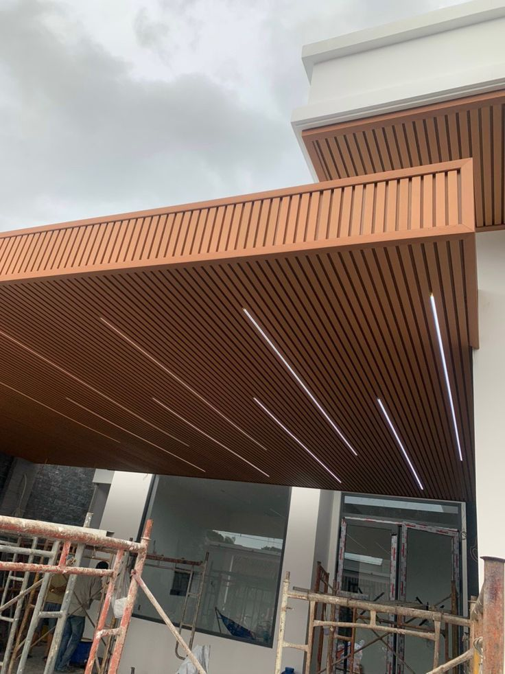
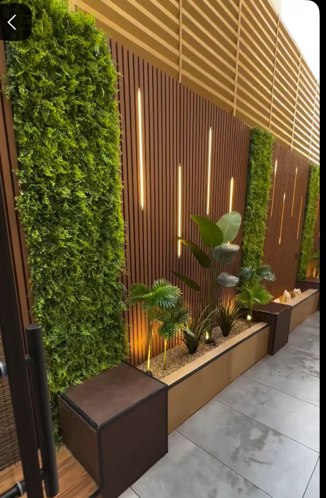
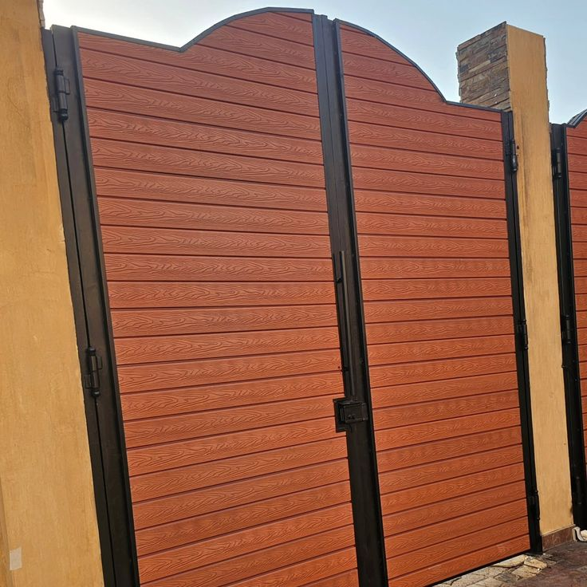
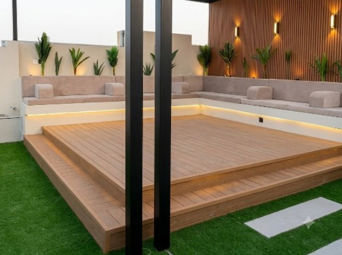
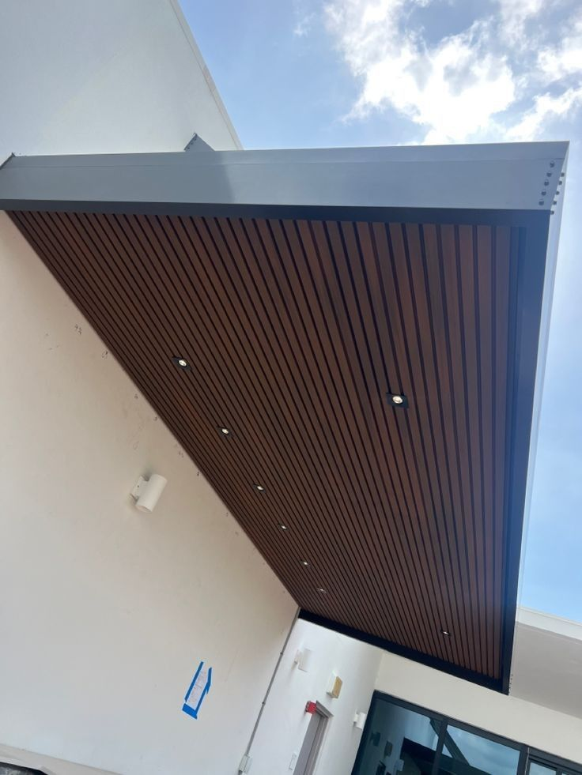
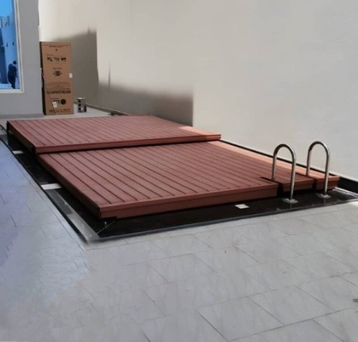

مظلات بديل الخشب
تغطية مظلات ببديل الخشب WPC مع ساندويش بنل عازل وقماش PVC حسب الطلب. مقاومة 100% للماء والشمس. متوفر مع اضاءة LED مخفية تعطي شكل فخم بالليل. هيكل حديد مجلفن + ضمان 10 سنوات.

ديكورات جدارية خارجية
تكسيات جدران خارجية بديل الخشب المظلع. شكل الخشب الطبيعي بدون صيانة. مقاوم للرطوبة والشمس والبهتان. تركيب سريع ومخفي بالكلبسات. مثالي للواجهات والجلسات الخارجية.

تكسيات ابواب بديل الخشب WPC
تكسية ابواب خارجية وداخلية ببديل الخشب WPC. مقاوم للماء والخدش. الوان متعددة شبيهة بالخشب الطبيعي. سهل التنظيف ويعطي فخامة للمداخل والابواب الرئيسية.

باركيه ارضيات بديل الخشب
تركيب باركيه خارجي WPC للاسطح والحدائق والمسبح. مقاوم للماء والانزلاق ولا يتأثر بالشمس. تركيب تعشيق بدون مسامير. عمر افتراضي طويل وصيانة شبه معدومة.

برجولات بديل الخشب
تنفيذ برجولات وجلسات خارجية ببديل الخشب. شكل راقي وعصري. لا يتأثر بالامطار ولا تحتاج دهان. مع امكانية اضافة اضاءة LED وانارة ديكور.

اسقف بديل الخشب
اسقف مستعارة خارجية ببديل الخشب للاستراحات والممرات. عازل للحرارة مع اضاءة مخفية. تركيب على هيكل حديد او المنيوم. شكل فخم ويدوم لسنوات.

تغطية مسابح بديل الخشبWPC
تغطية مسبح متحركة ببديل الخشب WPC - سحب يدوي* حول مسبحك لجلسة خارجية فخمة بضغطة يد. تغطية منزلقة على سكة حديد بعجلات، مغطاة ببديل الخشب WPC المقاوم للماء والرطوبة والشمس. شكل ديكور راقي + حماية 100% + أمان للأطفال. تفتح وتقفل بسهولة بدون كهرباء ولا صيانة. ضمان 10 سنوات .